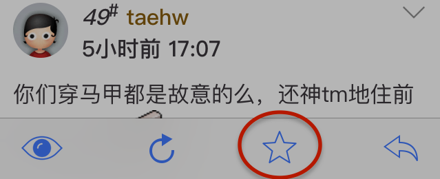
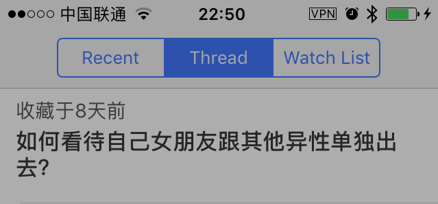
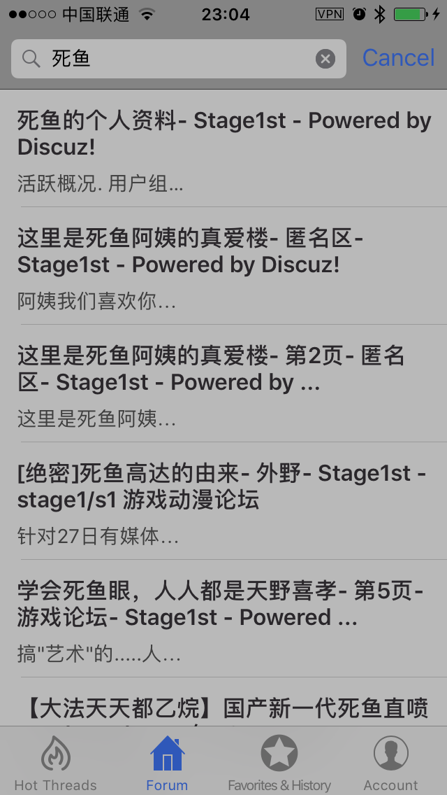
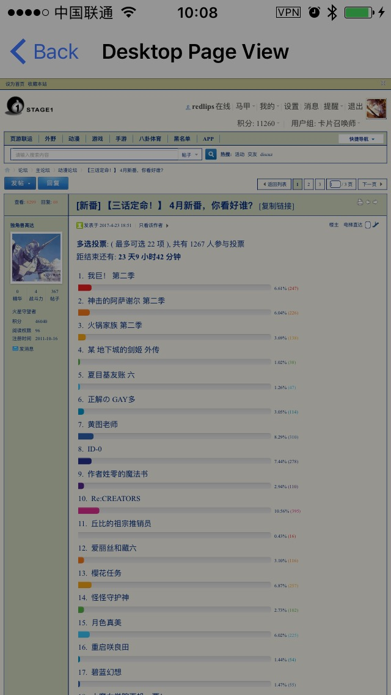

1.如何在网页端和手机端之间同步收藏？
在帖子详情页面，点击收藏按钮
然后，在收藏tab，选中网页收藏分区，就可以看到同步到网页的收藏列表了。
2.如何搜索帖子？🔎
Saralin的搜索功能是用Google自定义搜索实现的，所以需要客户端能访问Google。在论坛tab，点击右上角的搜索即可搜索，目前仅显示10条数据（后续会优化显示更多结果）。
3.如何进行投票？📊
有一些帖子里面嵌入了投票组件，在默认的帖子详情页面，你是看不到投票组件的。要想参与投票，你可以打开右上角菜单中的【查看桌面版页面】，然后在新打开的页面里面点击进行投票。
另外，任何时候你觉得帖子详情页面显示有异常，都可以通过这个方法打开原web页来查看。😊